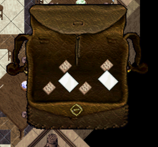
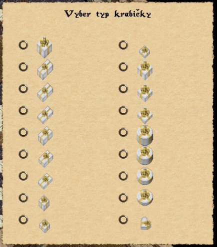
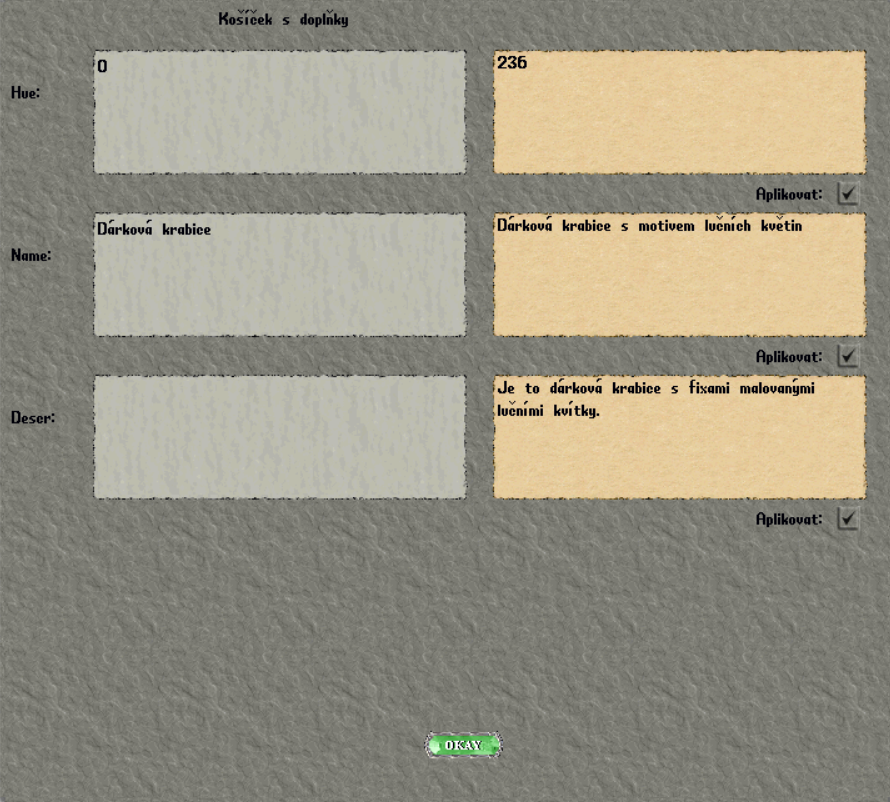
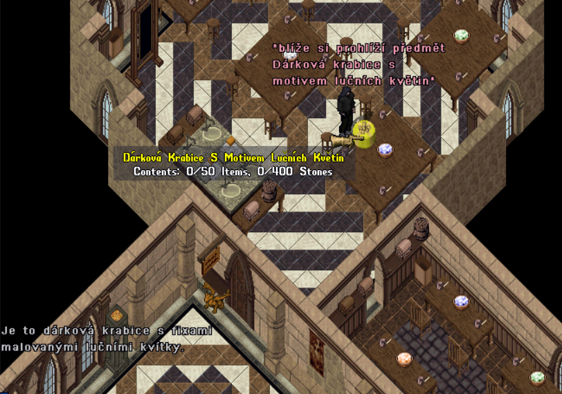

Dárkové krabice
1. Vezmi si sadu na výrobu krabiček
Z krabičky se sadami si vyber sadu na výrobu krabice. Připrav si její jednotlivé části tak, aby byli všechny vidět.

2. Slep jednotlivé části
Sadu s papíry si nech v batohu a sedni si k lepidlu a štětci u stolu.
Pokud lepidlo v kalíšku dojde, můžeš ho doplnit z nálevky.
- Dvakrát klikni na štětec a potom klikni na kalíšek s lepidlem.
- Jedním kliknutím postupně označ každý jeden papír v sadě.
- Nakonec klikni na svou postavu.
3. Vyber vzhled krabičky
V nabídce Vyber typ krabičky zvol vzhled, který se ti líbí.

4. Uprav barvu, název a popis
Použij košíček s doplňky. Otevře se editační okno (gump), ve kterém můžeš upravit barvu, název a popis krabičky.
| Pole v okně | Co zadat | Limit |
|---|---|---|
| Hue | Číslo vybrané barvy z barevného náhledu. | Podle dostupného výběru. |
| Name | Vlastní název krabičky. | Nejvýše 80 znaků včetně mezer. |
| Descr | Vlastní popis krabičky. | Nejvýše 240 znaků včetně mezer. |
- Vyplň údaje, které chceš změnit.
- U každé změněné položky zaškrtni Aplikovat a nakonec všechny změny potvrď tlačítkem OKAY.

5. Zkontroluj hotovou krabici
Hotovou krabici si blíže prohlédni. Ověř, že se název i popis zobrazují celé a že se žádná část textu neusekla. Pokud něco chybí, text zkrať nebo uprav a znovu ho zkontroluj.
- Do názvu ani popisu nepatří žádná nevhodná slova.
- Mysli na to, co tvá postava zvládne. Drobné nedostatky a chyby jsou hezkým zpestřením.
- Při tvoření pracuj pouze s tím, co máš k dispozici.

Vyber si barvu
Prohlédni si předměty a vyzkoušej jejich barevné varianty.